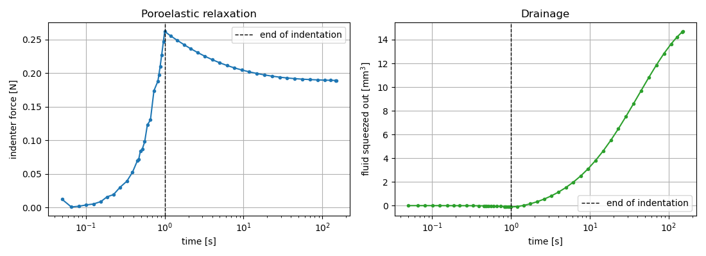
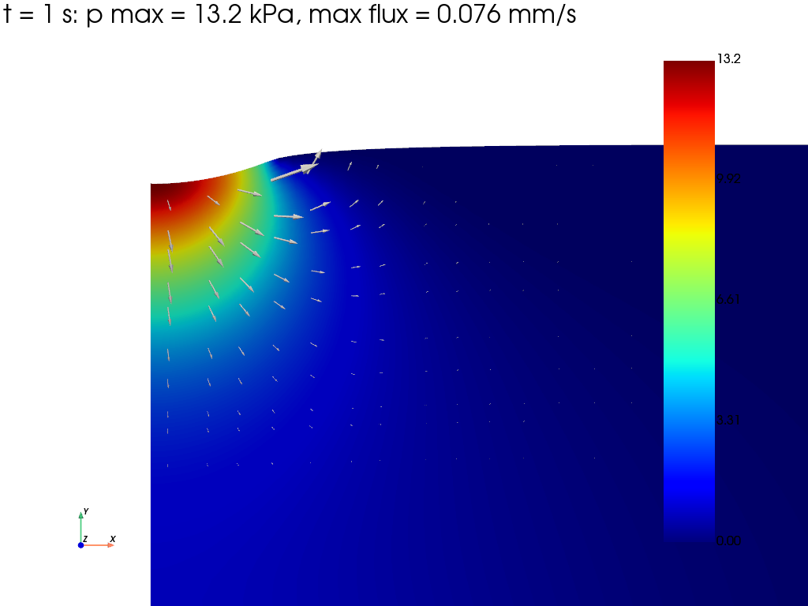
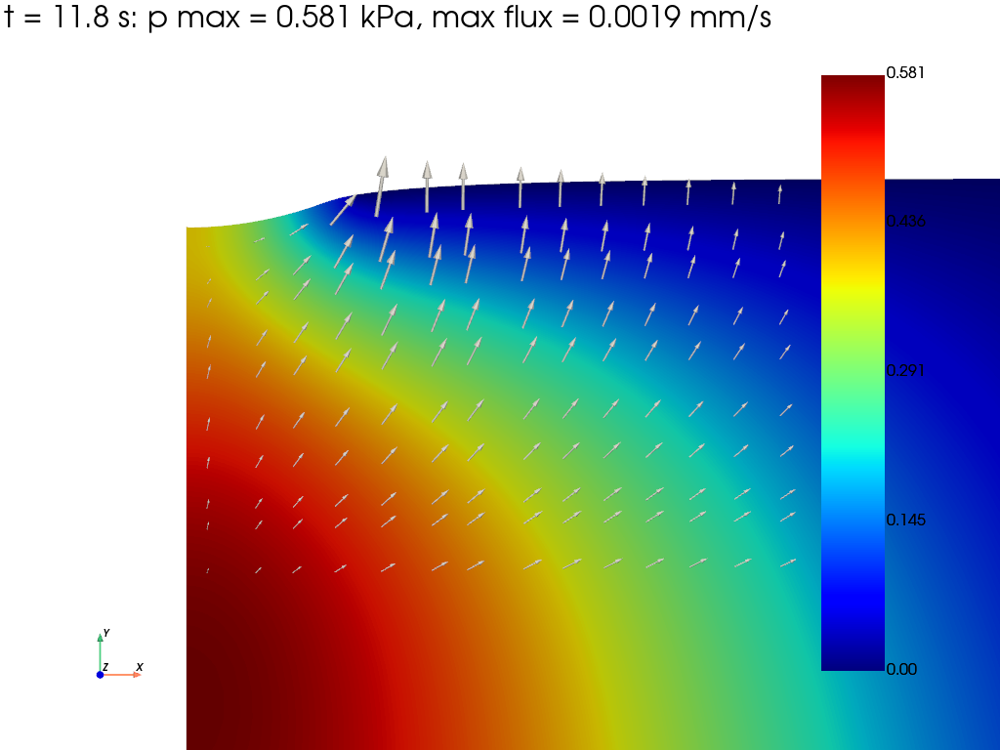
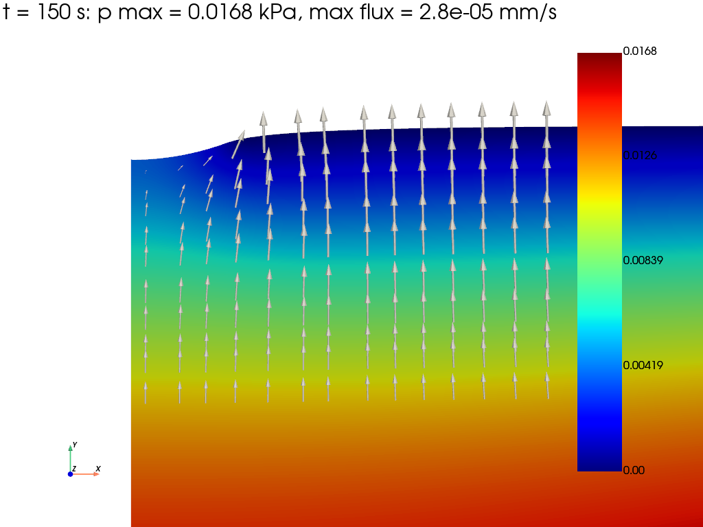

Note
Go to the end to download the full example code.
Indentation of a hyperelastic soft tissue: fluid exudation
A rigid hemispherical indenter is pressed into a layer of saturated soft tissue lying on a rigid substrate, as when pressing a fingertip on the skin. The indenter is pushed in quickly and then held in place.
Right after the indentation the fluid has no time to escape: it carries a large part of the load and the tissue responds as a nearly incompressible solid. The fluid is then squeezed out of the region under the indenter through the free top surface, and the force needed to hold the indenter relaxes towards the drained response of the skeleton. This poroelastic relaxation is the basis of indentation tests on cartilage, skin or hydrogels.
The skeleton is a compressible Neo-Hookean solid (simcoon
NEOHClaw), and the Holmes-Mow permeability decreases where the tissue is compacted.The indenter is a rigid body (
RigidTie2D) driven by an imposed vertical displacement. Its contact with the tissue is handled with the Incremental Potential Contact method (IPCContact).The contact face is impermeable while the rest of the top surface drains freely. Since the contact zone changes with time, the drained nodes are updated before each time increment.
The problem is axisymmetric (
2Daximodeling space,Xis the radius andYthe axis) and is solved in finite strain (nlgeom="UL").
Note
This example requires simcoon and ipctk.
import warnings
import matplotlib.pyplot as plt
import numpy as np
import pyvista as pv
import fedoo as fd
Parameters
Units: mm, N, MPa, s.
W = 15.0 # radius of the tissue sample
H = 10.0 # tissue thickness
R_s = 5.0 # radius of the hemispherical indenter
gap = 0.05 # initial gap between the indenter and the tissue
depth = 0.6 # indentation depth (after contact)
E, nu = 0.1, 0.2 # drained skeleton (100 kPa)
mu = E / (2.0 * (1.0 + nu))
kappa = E / (3.0 * (1.0 - 2.0 * nu))
phi0 = 0.8 # initial porosity
k0 = 10.0 # reference mobility k / mu_f [mm^4 / (N s)]
biot_M = 1.0e3 # Biot modulus: nearly incompressible constituents
Mesh
The tissue mesh is refined towards the axis and the top surface, where the contact takes place. The indenter is meshed between its spherical face and a flat top face. Both bodies are stacked in a single mesh, with one element set per body.
fd.ModelingSpace("2Daxi")
tissue = fd.mesh.rectangle_mesh(
nx=61, ny=41, x_min=0, x_max=1, y_min=0, y_max=1, elm_type="quad4"
)
tissue.nodes[:, 0] = W * tissue.nodes[:, 0] ** 1.5
tissue.nodes[:, 1] = H * (1.0 - (1.0 - tissue.nodes[:, 1]) ** 1.5)
tissue.element_sets["tissue"] = np.arange(tissue.n_elements)
r_ind = 0.6 * R_s # radial extent of the meshed part of the indenter
indenter = fd.mesh.rectangle_mesh(
nx=41, ny=5, x_min=0, x_max=1, y_min=0, y_max=1, elm_type="quad4"
)
r = r_ind * indenter.nodes[:, 0] ** 1.2
z_sphere = H + gap + R_s - np.sqrt(R_s**2 - r**2)
z_top = H + gap + R_s - np.sqrt(R_s**2 - r_ind**2) + 1.0
indenter.nodes[:, 0] = r
indenter.nodes[:, 1] = z_sphere + indenter.nodes[:, 1] * (z_top - z_sphere)
indenter.element_sets["indenter"] = np.arange(indenter.n_elements)
indenter_bottom = np.asarray(indenter.node_sets["bottom"]) + tissue.n_nodes
indenter_nodes = np.arange(indenter.n_nodes) + tissue.n_nodes
mesh = fd.Mesh.stack(tissue, indenter)
Constitutive laws and weak forms
PoroMechanicsSimple is the recommended variant
when the model has free-traction faces, as here. In 2Daxi the weak
forms include the hoop strain and the \(2 \pi r\) measure, so the
reaction forces are those of the full circle. The indenter has no weak
form: its nodes only follow the rigid body.
skeleton = fd.constitutivelaw.Simcoon("NEOHC", np.array([mu, kappa]))
permeability = fd.constitutivelaw.HolmesMowPermeability(k0=k0, n0=1.0 - phi0)
fluid = fd.constitutivelaw.PoroFluidProperties(
permeability=permeability,
fluid_viscosity=1.0,
biot_coefficient=1.0,
biot_modulus=biot_M,
initial_porosity=phi0,
)
wf_tissue = fd.weakform.PoroMechanicsSimple(skeleton, fluid, nlgeom="UL")
tissue_assembly = fd.Assembly.create(wf_tissue, mesh.extract_elements("tissue"))
Contact
IPC keeps the two bodies apart with a barrier active below the distance
dhat (relative to the bounding box diagonal). The Biot problem has no
potential, so the energy-based line search of IPC is disabled; the
collision-free step filtering (CCD) is kept.
The barrier stiffness is set explicitly. The automatic value is driven by the stiff undrained response and grows by orders of magnitude; a too soft barrier lets the gap close while the drained tissue relaxes under the indenter.
dhat = 1e-3
contact = fd.constraint.IPCContact(
mesh,
extract_surface=True,
dhat=dhat,
barrier_stiffness=1.0e4,
adaptive_barrier_stiffness=False,
line_search_energy=False,
psd_projection=False,
)
assembly = fd.Assembly.sum(tissue_assembly, contact)
pb = fd.problem.NonLinear(assembly)
pb.set_nr_criterion("Displacement", tol=5e-3, max_subiter=15)
Boundary conditions
axis
r = 0: no radial displacement, no flux;bottom: bonded to a rigid, impermeable substrate;
indenter: rigid body with an imposed vertical displacement (only the axial translation is compatible with axisymmetry); its nodes carry no fluid, so their
PorePressureis fixed;top surface of the tissue: free traction, drained (
p = 0) outside the contact zone and impermeable inside. A tissue node is in contact when its distance to the indenter face is below twice the barrier distancedhatof IPC;outer face
r = W: free traction, impermeable.
t_load = 1.0 # duration of the indentation
t_end = 150.0 # end of the relaxation
pb.bc.add(
"Dirichlet", np.setdiff1d(mesh.find_nodes("X", 0.0), indenter_nodes), "DispX", 0.0
)
pb.bc.add("Dirichlet", mesh.find_nodes("Y", 0.0), "Disp", 0.0)
with warnings.catch_warnings():
# the indenter only translates along the axis, which preserves axisymmetry
warnings.filterwarnings("ignore", message="RigidTie2D under the '2Daxi'")
pb.bc.add(fd.constraint.RigidTie2D(indenter_nodes))
pb.bc.add("Dirichlet", "RigidDispX", 0.0)
pb.bc.add("Dirichlet", "RigidRotZ", 0.0)
# ramped from the current state during the indentation, then held
pb.bc.add("Dirichlet", "RigidDispY", -(gap + depth))
pb.bc.add("Dirichlet", indenter_nodes, "PorePressure", 0.0)
tissue_top = np.setdiff1d(mesh.find_nodes("Y", H), indenter_nodes)
bbox = mesh.bounding_box
contact_tol = 2 * dhat * np.linalg.norm(bbox.size)
def nodes_in_contact(disp):
"""Top tissue nodes closer than contact_tol to the indenter face."""
x = mesh.nodes[tissue_top] + disp[:, tissue_top].T
face = mesh.nodes[indenter_bottom] + disp[:, indenter_bottom].T
a, b = face[:-1], face[1:] # segments of the indenter face
ab = b - a
ax = x[:, None, :] - a[None, :, :]
s = np.clip(np.sum(ax * ab, axis=2) / np.sum(ab * ab, axis=1), 0.0, 1.0)
dist = np.linalg.norm(ax - s[:, :, None] * ab, axis=2).min(axis=1)
return tissue_top[dist < contact_tol]
def update_drainage(pb, in_contact):
"""Impose p = 0 on the top nodes out of contact during the next increment.
A Dirichlet condition imposes an increment from its start value. The
start value is the current pressure, so that a node leaving the contact
zone is drained in one increment (time function stepping at the current
time).
"""
drained = np.setdiff1d(tissue_top, in_contact)
t_now = pb.t_fact_old # time factor at the end of the converged increment
pb.bc.remove("drained top")
pb.bc.add(
"Dirichlet",
drained,
"PorePressure",
0.0,
start_value=pb.get_dof_solution("PorePressure")[drained],
time_func=lambda t_fact: float(t_fact > t_now + 1e-12),
name="drained top",
)
pb.bc.add("Dirichlet", tissue_top, "PorePressure", 0.0, name="drained top")
Dirichlet boundary condition:
name = 'drained top'
var = 'PorePressure'
n_nodes = 61
value = 0.0
Time integration
The indentation and the relaxation are solved with adaptive time steps (the increment is cut when Newton-Raphson fails). A callback, executed after each converged increment, updates the drained nodes from the current contact zone (one increment lag) and records:
the force on the indenter;
the volume of fluid squeezed out of the tissue. With incompressible grains (Biot coefficient 1) it is the volume lost by the tissue, \(V_{out} = -\int_{\Omega_0} (J - 1) \, 2 \pi R \, dA_0\), up to the fluid compression \(p / M\) (about \(10^{-5}\) here), computed from
lnJat the Gauss points;at a few instants, the pore pressure and the Darcy flux \(\mathbf{w} = -(k(J)/\mu_f) \nabla p\), averaged at the nodes.
time = [0.0]
force = [0.0]
fluid_out = [0.0]
contact_radius = [0.0]
snapshot_times = [t_load, 10.0, t_end]
snapshots = {}
# reference radius at the Gauss points, for the 2*pi*R measure
R0 = tissue_assembly.mesh.convert_data(
tissue_assembly.mesh.nodes[:, 0],
"Node",
"GaussPoint",
n_elm_gp=tissue_assembly.n_elm_gp,
)
def darcy_flux():
"""Nodal Darcy flux on the current configuration."""
sv = tissue_assembly.sv
mobility = fluid.get_mobility(J=np.exp(sv["lnJ"]))[0][0]
grad_p = sv["_PorePressureGradient_gp"]
return np.array(
[
tissue_assembly.convert_data(-mobility * grad_p[i], "GaussPoint", "Node")
for i in range(2)
]
)
def after_increment(pb):
disp = pb.get_disp()
in_contact = nodes_in_contact(disp)
update_drainage(pb, in_contact)
time.append(pb.time)
force.append(-pb.get_ext_forces("RigidDispY")[0])
J = np.exp(tissue_assembly.sv["lnJ"])
fluid_out.append(
-tissue_assembly.integrate_field(2 * np.pi * R0 * (J - 1), "GaussPoint")
)
contact_radius.append(mesh.nodes[in_contact, 0].max() if len(in_contact) else 0.0)
# first increment reaching each snapshot time
if len(snapshots) < len(snapshot_times):
t_next = snapshot_times[len(snapshots)]
if pb.time >= t_next - 1e-9:
snapshots[pb.time] = (
pb.get_dof_solution("PorePressure").copy(),
disp.copy(),
darcy_flux(),
)
solver_options = {
"update_dt": True,
"dt_min": 1e-5,
"print_info": 0,
"save_at_exact_time": False, # let the time step grow up to dt_max
"callback": after_increment,
"exec_callback_at_each_iter": True, # after each converged increment
}
# indentation
pb.nlsolve(dt=0.05, t0=0.0, tmax=t_load, dt_max=0.1, **solver_options)
i_load = len(time) - 1
# relaxation, with growing time steps
pb.nlsolve(dt=0.2, t0=t_load, tmax=t_end, dt_max=20.0, **solver_options)
time = np.array(time)
force = np.array(force)
fluid_out = np.array(fluid_out)
print(f"peak force: {force[i_load]:.4f} N, relaxed force: {force[-1]:.4f} N")
print(
f"fluid squeezed out: {fluid_out[i_load]:.3f} mm^3 at the end of the "
f"indentation, {fluid_out[-1]:.3f} mm^3 at the end of the relaxation"
)
print(f"contact radius at the end of the indentation: {contact_radius[i_load]:.2f} mm")
peak force: 0.2619 N, relaxed force: 0.1890 N
fluid squeezed out: -0.116 mm^3 at the end of the indentation, 14.699 mm^3 at the end of the relaxation
contact radius at the end of the indentation: 2.07 mm
Force relaxation and drainage
The force peaks at the end of the indentation, when the fluid carries the load. During the fast indentation little fluid can escape: the tissue deforms nearly at constant volume. While the indenter is held, the fluid is squeezed out and the force relaxes at the same pace (1 mm3 = 1 µL).
fig, axes = plt.subplots(1, 2, figsize=(11, 4))
ax = axes[0]
ax.semilogx(time[1:], force[1:], "o-", ms=3)
ax.set_ylabel("indenter force [N]")
ax.set_title("Poroelastic relaxation")
ax = axes[1]
ax.semilogx(time[1:], fluid_out[1:], "o-", ms=3, color="tab:green")
ax.set_ylabel(r"fluid squeezed out [mm$^3$]")
ax.set_title("Drainage")
for ax in axes:
ax.axvline(t_load, color="k", ls="--", lw=1, label="end of indentation")
ax.set_xlabel("time [s]")
ax.legend()
ax.grid(True)
fig.tight_layout()
plt.show()

Pore pressure and fluid flow
Close-up of the contact region. The arrows show the Darcy flux. At the end of the indentation the pressure is concentrated under the contact zone and the fluid flows away from the impermeable contact face towards the drained top surface around the indenter. During the relaxation the pressure peak fades within a few seconds, but the fluid keeps draining out of the whole layer at a lower pressure. Color and arrow scales are set for each instant (their maximum values are given in the titles).
tissue_mesh = mesh.extract_elements("tissue")
tissue_nodes = np.unique(tissue_mesh.elements)
# arrows on a regular grid of the contact region (nearest mesh nodes, the
# surface nodes being excluded)
gx, gy = np.meshgrid(np.linspace(0.3, 7.5, 14), np.linspace(H - 5.0, H - 0.3, 10))
grid = np.c_[gx.ravel(), gy.ravel()]
inner = tissue_nodes[mesh.nodes[tissue_nodes, 1] < H - 0.25]
dist = np.linalg.norm(mesh.nodes[inner][None, :, :] - grid[:, None, :], axis=2)
arrow_nodes = np.unique(inner[dist.argmin(axis=1)])
for t_snap, (p, disp, w) in snapshots.items():
w_norm = np.linalg.norm(w[:, arrow_nodes], axis=0).max()
data = fd.DataSet(tissue_mesh)
data.node_data["PorePressure [kPa]"] = 1e3 * p
data.node_data["Disp"] = disp
pl = data.plot(
"PorePressure [kPa]",
scale=1,
clim=[0, 1e3 * p.max()],
title=(
f"t = {t_snap:.3g} s: p max = {1e3 * p.max():.3g} kPa, "
f"max flux = {w_norm:.2g} mm/s"
),
elevation=0,
azimuth=0,
show_edges=False,
show=False,
)
points = np.zeros((len(arrow_nodes), 3))
points[:, :2] = mesh.nodes[arrow_nodes] + disp[:, arrow_nodes].T
vectors = np.zeros((len(arrow_nodes), 3))
vectors[:, :2] = w[:, arrow_nodes].T / w_norm
arrows = pv.PolyData(points)
arrows["flux"] = vectors
pl.add_mesh(arrows.glyph(orient="flux", scale="flux", factor=0.8), color="white")
pl.camera.focal_point = (4.0, H - 2.5, 0.0)
pl.camera.position = (4.0, H - 2.5, 40.0)
pl.camera.zoom(2.2)
pl.show()



Total running time of the script: (0 minutes 47.593 seconds)